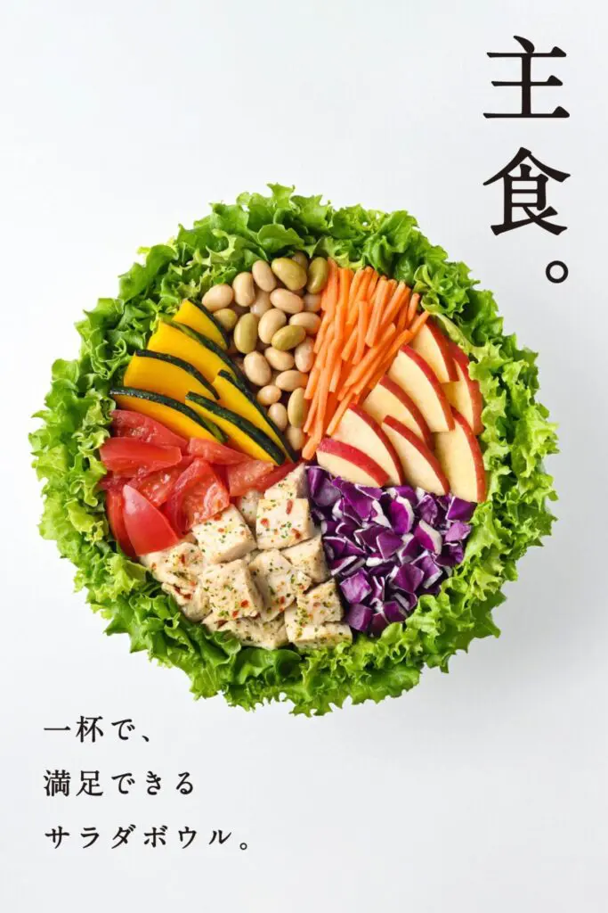
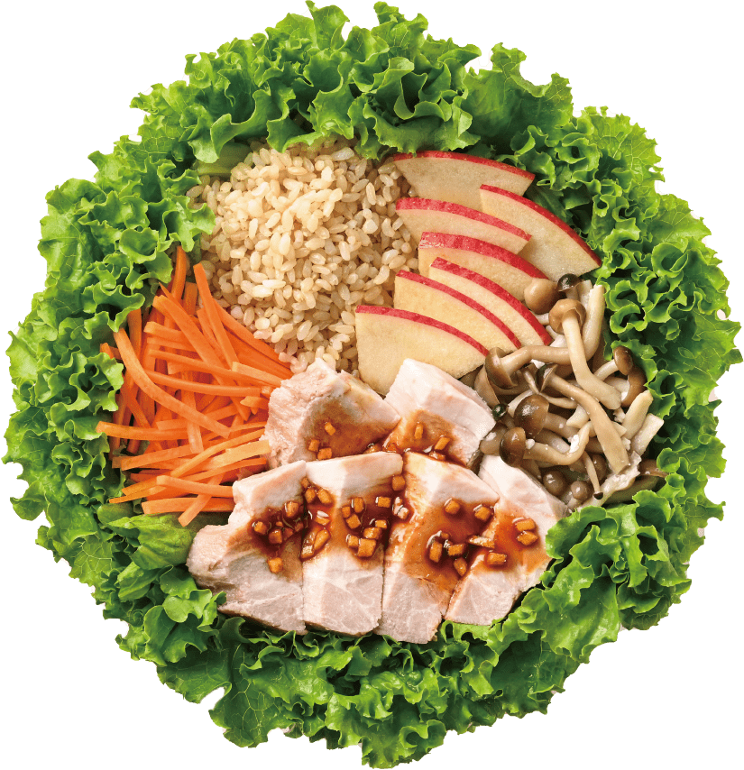
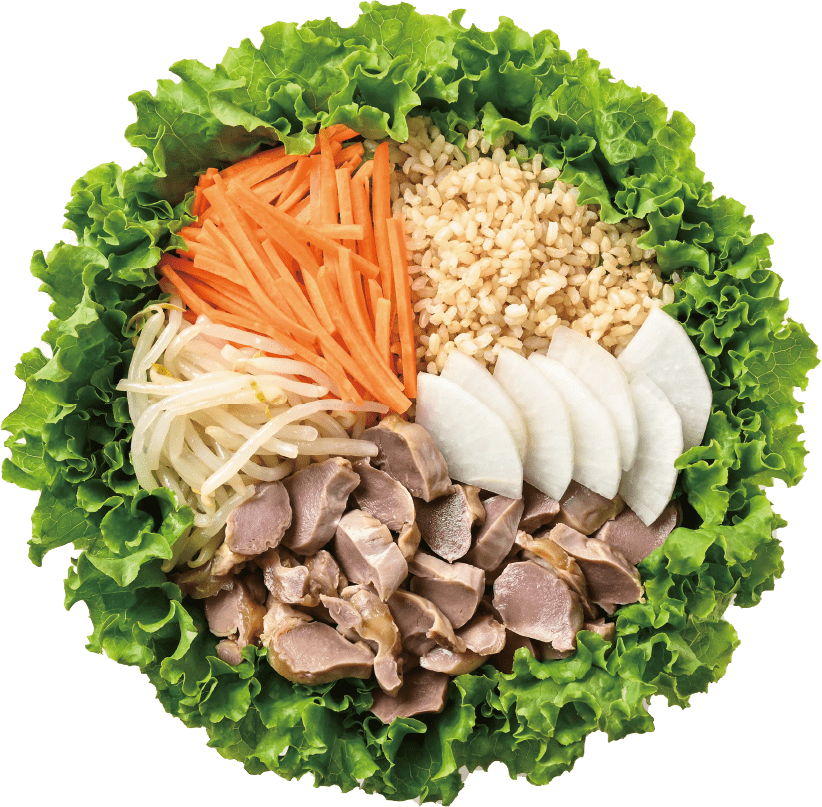
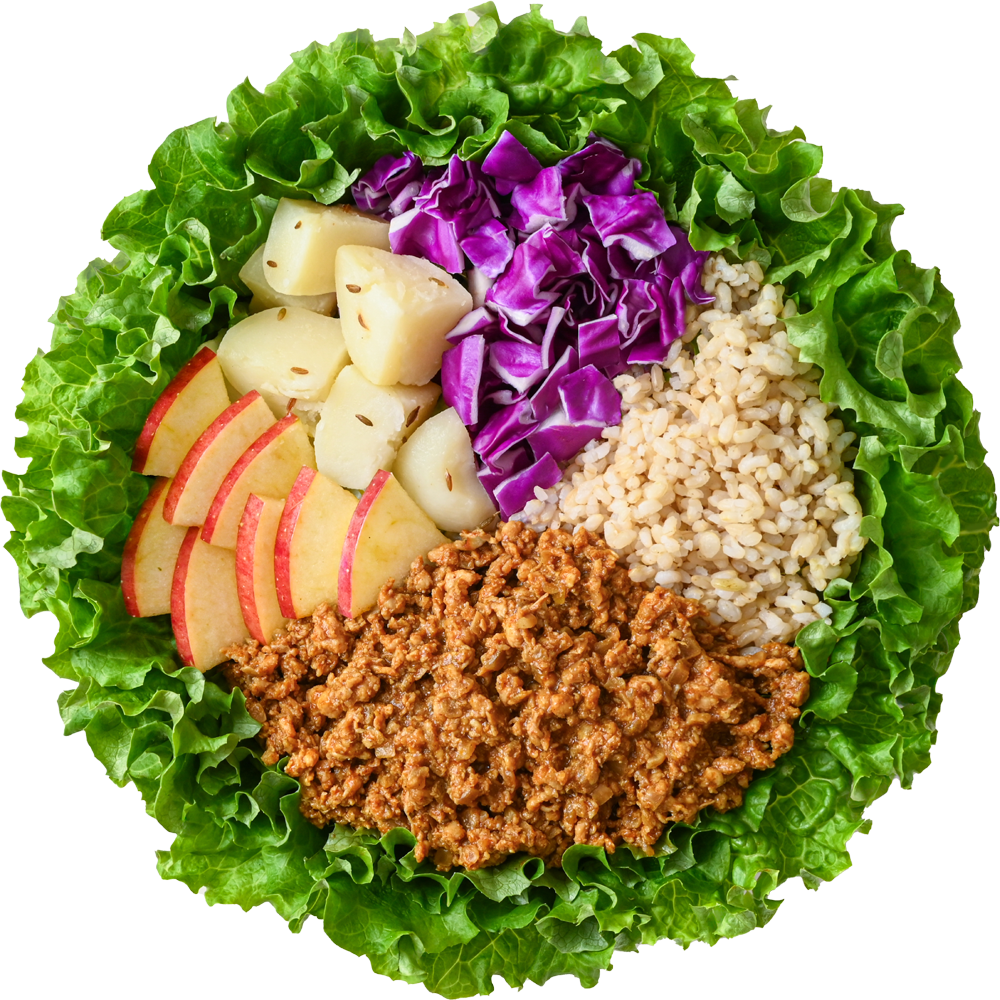
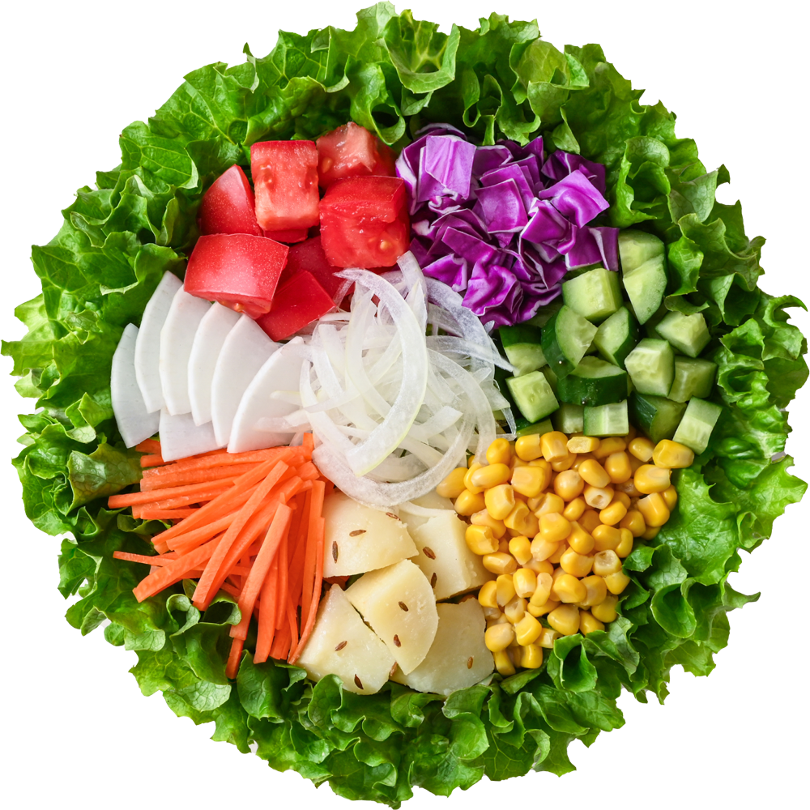

CHAPTER 00 ／ STANDARD SALAD
WithGreenの定番サラダボウル
創業以来こだわり続ける国産野菜100%。武文社長の「日本の生産者と消費者をつなぐ」想いを一杯に込めた、定番メニューの一部をご紹介します。
蒸し鶏のサラダボウルSTEAMED CHICKEN

ローストポークのサラダボウルROAST PORK

スモークチキンのサラダボウルSMOKE CHICKEN

砂肝のサラダボウルSUNAGIMO

キーマカレーのサラダボウルKEEMA CURRY

きんぴらのサラダボウルKINPIRA

1日分の野菜サラダボウル1 DAY VEGGIES
商品画像はすべて公式サイト（withgreen.club）より引用。最新メニュー・価格は公式サイトをご確認ください。
CHAPTER 01
店舗数の推移
出典：株式会社WithGreenプレスリリース（PR TIMES, 2026年3月）／株式会社ネタもと「広報PRのチカラ」インタビュー（2023年2月）。データポイントは公表値に基づく。
2016
神楽坂で1号店オープン
50店舗
2026年3月14日 達成
2,500,000食
年間サラダ販売数
100%
国産野菜（創業以来）
CHAPTER 02
武文社長の言葉でたどる、WithGreenの歩み
CHAPTER 03 / FOR YOU
あなたにぴったりのWithGreenサラダ診断
3つの質問に答えるだけ。今日のあなたに合う一皿を、国産野菜100%のWithGreenメニューから提案します。